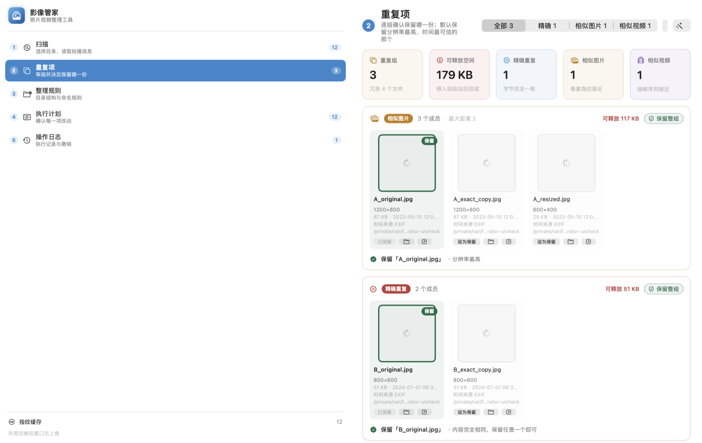
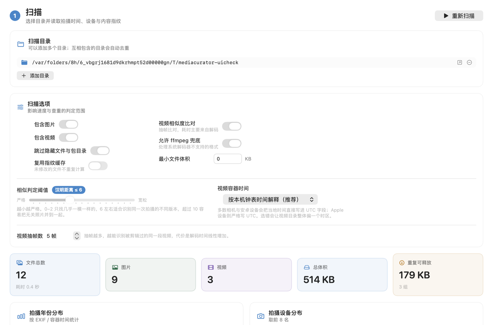
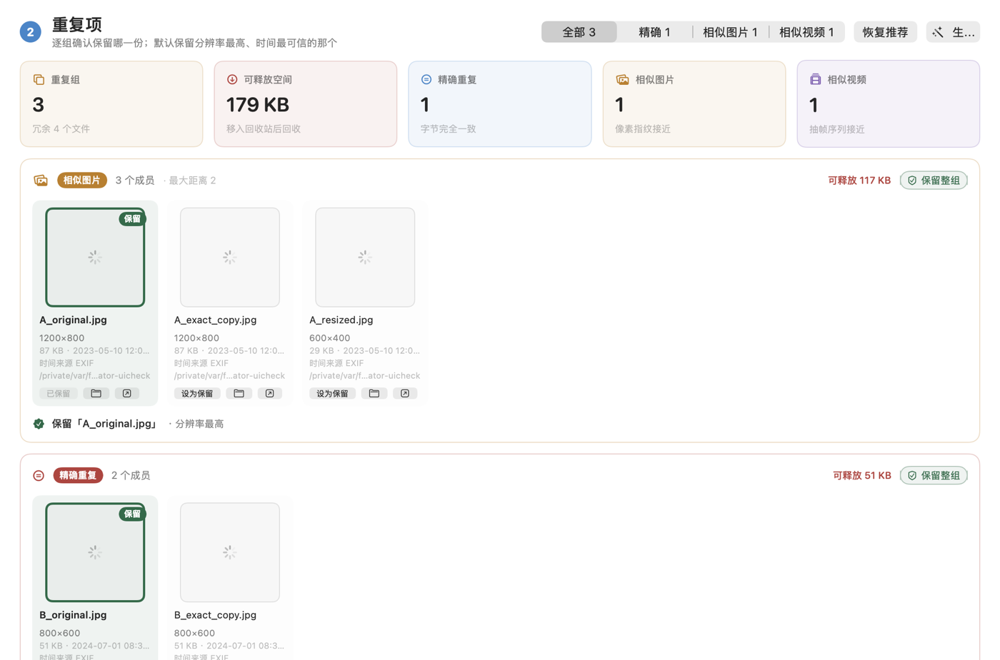
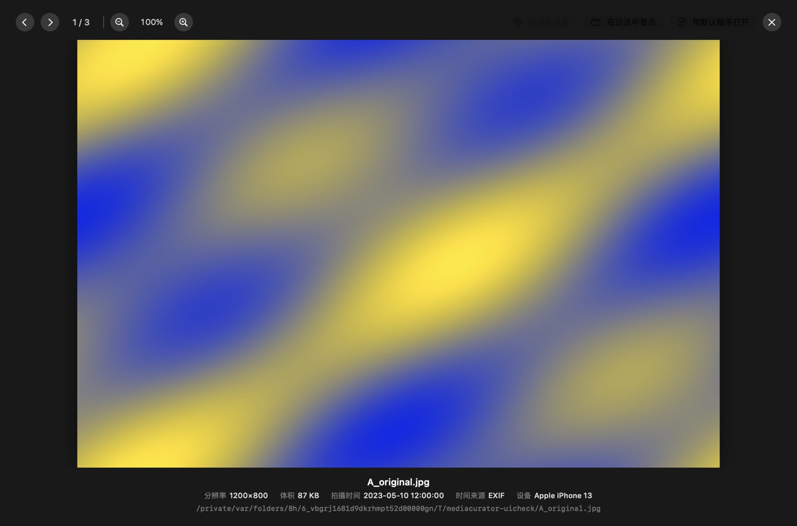
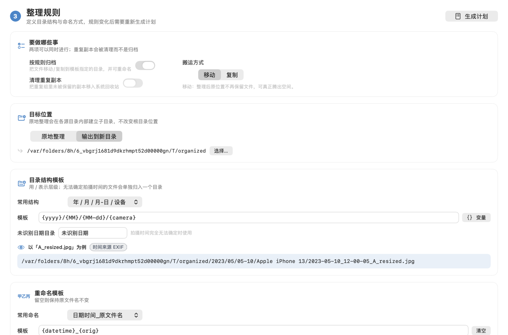
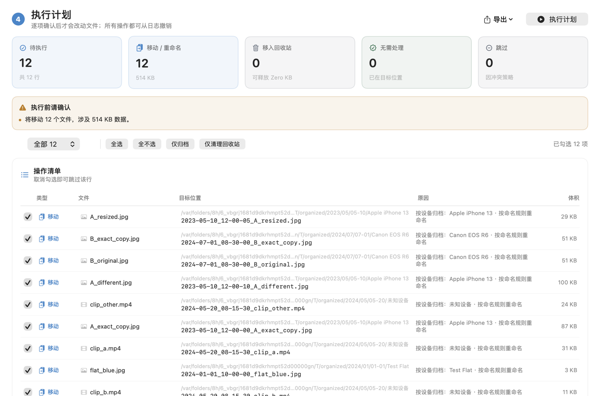
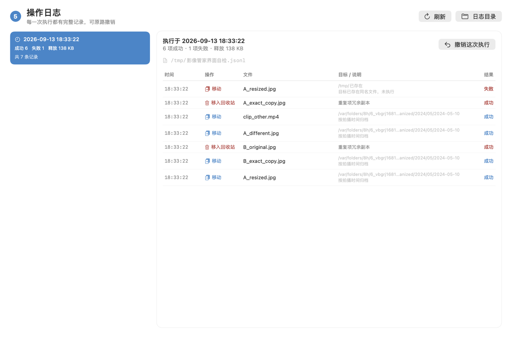

同一张照片存了五份
微信保存一次、导出一次、备份又拷一次。占的地方是其次，真正的麻烦是整理时不知道该删哪个。
macOS 原生应用 · 无第三方依赖 · 不上传任何文件
影像管家扫描你的照片库，找出真正重复与长得像的文件，按拍摄时间和设备归入清晰的目录结构， 并支持批量重命名。零依赖、纯本地运行，所有改动先出计划、由你确认， 删除只到回收站，每一步都能撤销。

微信保存一次、导出一次、备份又拷一次。占的地方是其次，真正的麻烦是整理时不知道该删哪个。
纯色、白墙、天空这类「平坦画面」在感知哈希上极易互相碰撞，普通查重工具会把它们误判成同一张。
有的照片有 EXIF，有的只能从文件名猜，视频则记在容器里且时区语义还分两种。混在一起排序就全乱了。
不是「一键整理」的黑盒：每一阶段的结果都摆在界面上，可以逐项检查、逐项否决。
选择目录后读取拍摄时间、设备信息与内容指纹。全程只读，不改动任何文件。 第二次扫描会复用缓存，通常快一个数量级。

按「精确重复 / 相似图片 / 相似视频」分组，每组给出保留建议和具体理由 （分辨率最高、时间戳最可信、体积最大…）。点缩略图可放大比对，也可以一键整组保留。

看细节不用切到别的程序：滚轮缩放、拖拽平移、双击在适应窗口与 200% 之间切换， 方向键在组内翻页。视频直接内嵌播放器。

九种目录结构模板，从「年/月/月-日/设备」到扁平的年-月-日；命名模板支持 30 个变量。 改模板时右边实时预览改名结果，确认无误再生成计划。

生成一份逐条的操作清单，此时还没有碰过文件系统。你可以逐项勾选、看清每一条的 理由，确认后才执行。执行过程写进日志，随时可以整批撤销，文件原路退回。


多数工具只比文件的字节。但同一段视频被转码、加了片头、重新剪过之后，字节完全不同 —— 那才是真正占地方又难分辨的部分。
| 判定类型 | 怎么判 | 能抓到什么 |
|---|---|---|
| 精确重复 | 首尾各 256 KB + 文件大小做快速签名预筛，只对碰撞的候选算完整 SHA-256 | 字节完全相同的副本（换过目录、改过名的同一份文件） |
| 相似图片 | DCT 感知哈希（64 位）+ 分块汉明索引，外加 4×4 平均色校验 | 缩小版、重新压缩、轻微裁剪过的同一张照片 |
| 相似视频 | 时间轴等距抽帧比对哈希序列，并校验时长差异 | 转码过、加过片头片尾、重新剪辑过的同一段视频 |
| 整组保留 | 人工判断并入计划：该组不产生任何清理操作 | 「这几个确实都要留，只是长得像」的情况 |
那样会同时制造两个问题：一张照片的缩小版再也找不到它的原件（原件已经被精确重复「占用」了）， 而两条流水线都跑全量时，同一批文件又被报两次、可释放空间重复计算。 这里的做法是把两种关系并进同一棵并查集，最后按簇内「内容标识」的数量判定类型 —— 每个概念上的同一批素材只产出一个分组，既不漏也不重。
这一节是这个工具和多数「清理软件」最本质的区别。
读取元数据与内容指纹，不修改、不移动、不删除任何文件。
规划阶段只做「目标路径是否已存在」这类只读探测，产出一份可以逐条审阅的清单。
清理动作只有移入系统回收站。程序里不存在直接删除文件的代码路径， 连「覆盖同名文件」也是先把原文件移入回收站再落位。
执行过程写入 JSONL 日志。移动与重命名原路退回，回收站里的文件从回收站取回 —— 包括被顶替的那份。
扫描本地目录，不联网、不上传、不需要账号。
纯色、白墙、天空、截图在感知哈希上会严重碰撞 —— 实测一张纯绿图和一张近白图的 64 位哈希完全相同。只看哈希距离，工具就会建议你删掉其中一张。
所以除了哈希，还会算一份 4×4 平均色网格，颜色偏差过大时直接拒绝合并。 自检里有一条专门的对抗用例守着这个行为。
直接解析 MP4 的 mvhd 头拿到容器时间，而不是为每个文件启动一个 ffprobe 进程 ——
一次导入上百个视频时，进程开销会直接变成规划阶段的瓶颈。
注意时间基准是 1904 年而非 1970 年，且 moov 可能写在文件尾部。
非 MP4 系容器（MKV / MTS / WMV）才退回 ffprobe。
适用于 M1 / M2 / M3 / M4 及更新芯片的 Mac
Intel 芯片的 Mac，或不确定自己用哪种芯片时选这个
系统要求macOS 14.0 或更高版本。没有第三方运行时依赖，双击即可运行。
当前构建使用临时签名，没有购买 Apple 开发者证书。自己下载使用没有问题， 但 Gatekeeper 会拦一道。三种解决办法，任选其一：
xattr -dr com.apple.quarantine /Applications/MediaCurator.app解包后应用名为 MediaCurator.app，显示名是「影像管家」。
源码、构建脚本与自检代码都在仓库里：__REPO_SLUG__